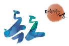

독도(獨島)라는 명칭은 한국어와 중국어 화자들이 일반적으로 사용한느 이름이다. 인도유럽어권에서는 리아쿠르 바위섬, 일본어권에서는 다케시마 섬이라 부른다. 20세기 조까지는 독도, 석도 또는 마쓰시마라고 불리었다. ... 생략
독도는 주로 두 개의 섬으로 이루어지며 150 미터 떨어진 두 섬은 동도와 서도로 불린다. 약 90개의 섬과 암초로 이루어진 신생대 화산암으로 구성되어 있다. 독도는 동경 약 131 52위도 약 37 14에 위치한다. ...생략
900명이 넘는 한국인 시민들이 이 섬에 거주하며, 실제로 영구거주를 하는 사람은 단 두 사람이다. 한국정부는 거주주장을 하기 위하여 이들에게 보조금을 지불하고 있다. ...생략